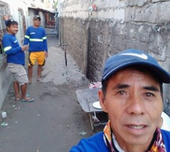
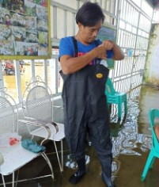

REYNALDO LUZANO
Sa barangay, madalas akong nakatalaga sa mga gawaing pang-konstruksyon. Ngunit tuwing dumarating ang bagyo, halos lahat ng oras ay nauubos sa pagpapatrolya. Minsan, sobrang nakakapagod na kailangan naming matulog na lamang sa aming quarters sa barangay. Madalas pa ay nakakalimutang kumain nang maayos dahil lubog sa baha ang buong komunidad.

Walang makapasok na delivery, sarado ang mga tindahan, at kami ay nananatiling nakabantay. Aminado ako na may mga pagkakataong nakakabigla ang lahat. May mga gawain sa bahay na kailangan kong isantabi upang manatiling naroroon sa barangay. Halimbawa, dapat kong ayusin ang aming pintuan at itaas ang plataporma upang mapigil ang tubig, ngunit hindi ko ito magawa dahil abala ako sa pagbubuhos ng semento sa mga daanan sa Centro Uno. Ito ang pinili kong tungkulin bilang boluntaryo, kaya’t dapat kong panindigan. Totoo ang sinasabi ng iba na inaabot ng buwan bago humupa ang baha, lalo na sa Centro Uno. Alam ko ito dahil ang aming bahay ay nasa tabi mismo ng ilog, at bukod sa ulan ay dinadagdagan pa ng mataas na alon mula sa dagat. Kaya’t sa tuwing may pahinga mula sa patrol, pilit akong umuuwi upang tingnan ng kalagayan ng aking pamilya, lalo na kapag tumatawag ang aking mga anak dahil sa tumataas na tubig at tumutulong bubungan.

Pinakamahirap para sa akin bilang boluntaryo ang paglusong sa malalim na tubig tuwing may operasyon. Umaabot ito sa tuhod, mabigat sa katawan, at kailangan tiisin hanggang matapos ang shift. Isang beses, habang namimigay kami ng relief goods, ay inabot kami ng ilang oras na nakalubog sa baha. Kinagat ng alipunga ang aming mga paa, nagkaroon ng sugat, at muli pa rin naming nilublob sa maruming tubig. Naaalala kong napahiyaw ako sa sakit ngunit nagpatuloy pa rin hanggang matapos ang aming tungkulin. Dahil hindi na sapat ang mga bota mula sa barangay, ilan sa amin ay bumili ng waterproof jumpers gamit ang sariling pera. Sanay na ako sa mabibigat na gawain, ngunit hindi pa rin nawawala ang pagkagulat sa biglaang buhos ng ulan. At higit sa lahat, nakakatakot pa rin ang malalakas na hangin tuwing bagyo.
Ang mga karanasang ito ay madalas na hindi napapansin ng ilan sa aming komunidad. Hindi nila nakikita ang sakripisyo at matinding hirap na pinagdaraanan namin. May mga hinaing sila tungkol sa sitwasyon ng pagbaha, ngunit ganoon din kami. Hindi kami ligtas sa kalupitan ng baha, kami mismo ang unang nakakasaksi at nakakaranas nito bilang apektadong pamilya at bilang frontliner ng barangay. Kaya’t ang hiling ko ay magkaroon ng mas malalim na pag-unawa at pagkakapantay-pantay sa pagtugon sa krisis. Mahal ko ang pagtulong sa kapwa, at umaasa akong mas marami pang makiisa sa aming maliit na grupo ng mga boluntaryo.